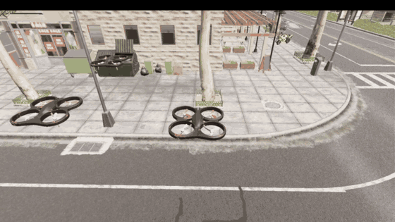

无人机编队飞行（Leader-Follower）
编队飞行的 ROS 侧实现：长机按航点序列巡航，僚机以「长机当前位置 + 队形偏移」
为期望位置，三架共用一条 AirSim RPC 连接（用 vehicle_name 区分），位置误差经
PID 转成三维速度指令下发，完成一字横队 / 三角 / 纵队等队形的保持与动态切换。
源码位于
src/air/uav_formation_flight，
完整运行步骤与参数说明见
README.md。

演示（column_straight 纵队任务）：长机沿街巡航、僚机保持队形。
1. 它解决什么问题
多机编队要「保持相对位置」，比单机跟踪航点难在四件事上，本模块逐条处理：
- 起飞柱只有一根。OpenHUTB 这个构建里
settings.json的X/Y/Z不生效， 三架载具会在同一个坐标生成。因此起飞必须严格依次进行：上一架先爬升， 再横向让出柱子，下一架才允许起飞。 - 执行机构有约 0.65 秒延迟。从下发速度指令到飞机真正达到该速度，实测延迟
0.65 s（scripts/lag_probe.py：给常值速度脉冲，用互相关求滞后）。这个延迟 决定了控制带宽上限，也决定了不能把航点当阶跃指令丢给 PID。 - 街道不是空场地。演示街道两侧 4~6 米高处有灯柱（
BP_StreetLight_*）与 行道树，横向可用余量只有 5 米左右 —— 这直接影响演示队形的选择（见第 5 节）。 - 高度会被横向机动带偏。持续横向加速时飞机容易高出目标约 1 米，进而蹭到 路灯或树冠。抑制横向机动（限速参考 + 前馈）后，高度误差随之回到亚米级。
2. 架构位置
本模块直接使用 AirSim RPC（airsim.MultirotorClient），不依赖 ROS 桥：
| 层次 | 组件 | 说明 |
|---|---|---|
| 仿真器 | OpenHUTB / AirSim | 多旋翼模式，RPC 端口 41451，载具名见 settings.json |
| 控制 | formation_controller.py |
长机航点跟踪 + 僚机队形保持，20 Hz 控制与采样 |
| 参数 | config/params.yaml |
连接、飞行、PID、队形、任务五段 |
| 启动 | launch/main.launch |
加载参数、命令行覆盖任务与增益、启动节点 |
与 carlair_ros_bridge 的区别：桥接模块把 AirSim 包装成 ROS 话题，适合与
感知/规划模块对接；本模块关心的是多机协同控制，直接走 RPC 更省一层延迟。
3. 运行
宿主（Windows）：启动 OpenHUTB 模拟器（AirSim 多旋翼模式），
settings.json 的 Vehicles 段声明长机与僚机（默认 SimpleFlight、
SimpleFlight2、SimpleFlight3）。模拟器是 Windows 程序，不在虚拟机里启动。
虚拟机：本实验用的是 ROS 1 Noetic + catkin（Ubuntu 20.04），工作空间用
catkin_make 编译，每开一个新终端都要先 source devel/setup.bash 才能 roslaunch；
ROS 安装、依赖与工作空间的建立见环境配置与前置准备，
Python 客户端安装与端口连通性检查见建立虚拟机和空域载具之间的连接。
chmod +x ~/catkin_ws/src/uav_formation_flight/scripts/*.py
cd ~/catkin_ws && source devel/setup.bash
roslaunch uav_formation_flight main.launch mission:=column_straight
可覆盖的命令行参数：mission（任务名）、kp / ki / kd（PID 增益）、
log_dir（日志目录，默认 $HOME/uav_formation_flight_logs）。
节点启动后会自动完成：重置关卡 → 三架落地并记录起飞点 → 依次起飞、逐架展开 → 长机按航点飞行、僚机保持队形 → 到点降落 → 写出 CSV 与指标。
4. 参数
config/params.yaml 的 airsim 段（连接）：
| 参数 | 默认 | 说明 |
|---|---|---|
ip |
192.168.237.1 |
宿主机 VMnet8 地址，每台机器不同，按自己的网络改 |
timeout |
30.0 |
单次 AirSim RPC 的超时时间（秒）。模拟器还在加载场景、被按 P 暂停或宿主机繁忙时，一次调用可能要几秒才返回，10 秒容易误报 Request timed out，故放宽到 30 秒 |
leader |
SimpleFlight |
长机载具名，须与 settings.json 的 Vehicles 一致 |
followers |
[SimpleFlight2, SimpleFlight3] |
僚机载具名列表，顺序与 shapes 的偏移一致 |
flight 段（长度单位米、速度单位米/秒）：
| 参数 | 默认 | 说明 |
|---|---|---|
control_rate |
20.0 | 控制与采样频率。PID 的 dt 用实测周期，不写死标称值 |
takeoff_altitude |
3.0 | 队形飞行高度（也是僚机展开时的平移高度） |
takeoff_interval |
1.0 | 三架依次起飞的时间间隔（秒），避免在地面相互干涉 |
alt_separation |
3.0 | 长机展开时的抬升量，用来让出起飞柱；机身约 1.5 米，2 米会挤到桨叶 |
leader_clear_offset |
[2.5, 0.0] |
长机沿马路方向让开柱子的距离（沿 x 走不经过行道树） |
deploy_mode |
position |
展开阶段用 AirSim 自带位置控制（稳定优先）；pid 可选，用于对比 |
deploy_offset |
[0.0, 0.0] |
展开阶段的额外水平偏移（ENU 米），一般留 0 |
altitude_mode |
velocity |
高度通道下发方式：velocity 把三维速度都交给 PID；setpoint 改用 AirSim 自己的高度环（两条路都实飞过，见第 8 节第 6 条） |
reset_on_start |
true |
每次运行前重置关卡，保证三架从同一起点起飞 |
cmd_duration |
0.10 | 速度指令有效期，保持与控制周期同量级 |
leader_velocity_ff |
0.5 | 僚机前馈增益：叠加长机速度（先过 0.3 秒低通），抵消追赶移动目标的固有滞后 |
leader_velocity_ff_tau |
0.3 | 前馈速度的低通时间常数（秒），抑制长机速度抖动 |
leader_ref_speed |
0.7 | 长机引导点沿航点折线的推进速度（替代阶跃航点参考） |
max_speed / max_vertical_speed |
2.0 / 1.0 | 水平 / 垂直速度上限 |
waypoint_tolerance / formation_tolerance |
0.25 / 0.30 | 长机到位判据 / 队形保持判据 |
waypoint_timeout / deploy_timeout |
25.0 / 30.0 | 单航点超时 / 单架展开超时 |
settle_time |
1.0 | 进入容差后继续保持的时间，用于统计稳态误差 |
collision_check_every |
5 | 每几拍查询一次碰撞（simGetCollisionInfo，0 = 关闭） |
max_duration |
150.0 | 单次任务总时长上限，到点自动收尾 |
pid 段为位置误差到速度指令的增益，默认 kp=0.4 ki=0.02 kd=0.05、积分限幅
integral_limit=1.0。（单机整定到 kp=1.0 是稳的，三机同飞必须降——见第 8 节
第 8 条。另外 launch/main.launch 里的同名默认值会覆盖这里，改增益要两处一起改。）
5. 队形与任务
shapes 段定义僚机相对长机的 ENU 偏移（顺序与 airsim/followers 一致）：
| 队形 | 偏移 | 说明 |
|---|---|---|
line |
(0,-3)、(0,+3) |
一字横队，左右各 3 米 |
column_x |
(-3,0)、(-6,0) |
沿航向纵队，长机正后 3 米 / 6 米 |
column |
(0,-3)、(0,-6) |
横向纵队 |
triangle |
(0,-3)、(-2.6,+1.5) |
等边三角形，长机为前顶点 |
missions 段定义长机航点与队形切换时刻表：
| 任务 | 队形 | 说明 |
|---|---|---|
line_straight |
line |
一字横队直线巡航 |
column_straight |
column_x |
纵队直线巡航 —— 本街道推荐用于演示与录屏 |
triangle_circle |
triangle |
三角编队绕半径 6 米的圆 |
switch_shape |
横队→三角→纵队 | 队形动态切换，统计过渡时间 |
演示队形为什么用纵队：这条街两侧 4~6 米高处是灯柱与行道树，横向可用余量 约 5 米。一字横队左右各 3 米时，僚机离灯柱只剩约 1 米，长机的任何摆动都会让它 蹭上去。纵队让三架全程压在马路中线上，侧向余量超过 3 米，从几何上避开这个问题。 需要一字横队的画面时，应换到更宽的空地，或降低高度并收窄间距。
6. 输出与指标
运行结束后在日志目录生成两个文件：
formation_<任务>_kp.._ki.._kd...csv：每拍一行，列为t, shape, vehicle, x_ref, y_ref, z_ref, x, y, z, ex, ey, ez, dist, u_x, u_y, u_z, pid_x, pid_y, pid_z, ff_x, ff_y, ff_z。 其中u_*是这一拍实际下发的速度指令（已限幅）——用它可以直接量出 「指令 → 实际速度」的延迟，不必再靠复现；后六列是限幅之前的 PID 输出与前馈项， 用于分离「到底哪一项在推指令」（排查「误差很小、指令却满幅」这类现象时就靠它）。..._metrics.csv：汇总指标。
| 指标 | 含义 |
|---|---|
leader_track_rms |
长机相对引导点的跟踪误差 RMS |
formation_rms[僚机] / formation_max |
僚机队形误差的 RMS / 峰值 |
formation_setup_time |
展开耗时（三架就位） |
collision_count[载具] |
碰撞次数（按对象名去重，已过滤地面接触噪声） |
loop_rate |
实测控制循环频率 |
switch_time[队形] |
队形切换的过渡时间 |
配套脚本：
scripts/plot_formation.py：由 CSV 画轨迹图与误差曲线；scripts/fleet_check.py：只做连飞检查（三架起飞/悬停/降落）；scripts/lag_probe.py：量「速度指令 → 实际速度」的延迟；scripts/tune_hover.py：被控对象辨识 + 位置环增益试跑（单机，不录屏）；scripts/deploy_probe.py：单独复现展开阶段并打印碰撞对象；scripts/vehicle_diag.py：逐架对比状态估计与真值、量执行机构响应。
7. 实测结果
被控对象（单机，tune_hover.py）
| 项目 | 水平（东向） | 垂直 |
|---|---|---|
| 稳态速度比（指令 0.5 m/s） | 0.97 | 1.00 / 1.01 |
| 上升时间（63%） | 0.95 s | 0.05 s |
| 位置环（kp=1.0/ki=0.05/kd=0.2）稳态 RMS | 0.026 m | 高度 RMS 0.014 m |
指令延迟（lag_probe.py）：0.65 s，且与指令有效期（0.5 s / 0.05 s）无关，
说明延迟来自 AirSim 内部的速度跟踪，而不是指令队列。
编队任务（column_straight，三机，kp=0.40 / ki=0.02 / kd=0.05）
| 指标 | 实测 |
|---|---|
leader_track_rms |
0.268 m |
formation_rms / formation_max（SimpleFlight2） |
0.465 m / 0.745 m |
formation_rms / formation_max（SimpleFlight3） |
0.467 m / 0.739 m |
formation_setup_time（依次起飞 + 展开） |
47.6 s |
collision_count（三架） |
0 / 0 / 0 |
loop_rate |
20.0 Hz |
| 航点 | 5 / 5 全部到达，任务段 36.0 s |
任务段实测高度：长机 2.87~3.22 米，僚机 2.57~3.41 米（设定 3.0 米）。僚机的带宽比长机大， 因为它的期望高度就是长机的实际高度，而长机本身还有约 ±0.1 米的起伏。高度误差中位数 0.09 米（长机）/ 0.15 米（僚机），队形误差峰值仍在 0.75 米以内。同一配置另跑一次， 三个指标分别是 0.268 / 0.466 / 0.469 米，与上表一致。演示动图见文首。
8. 踩过的坑
这些问题都实测复现过，写在这里是为了让后来者少走弯路。
- 三架同点生成 → 起飞必须严格依次。上一架没让开之前起飞下一架，物理引擎会把 两架互相弹开，表现为「一架不动、另外两架摇摆」。
- 5~6 米高度朝人行道横移会撞树冠。同样的平移动作在 3~4 米高度连做两次都一次 成功，在 5~6 米高度两次都失败（残差 1.1~1.9 米、绕圈 30 秒不收敛）。展开改为 低空横移后问题消失。
- 航点不能当阶跃参考。
kp=1.0配 0.65 秒延迟，阶跃指令必然过冲成极限环： 长机来回摆、高度被横向加速度顶高约 1 米、僚机跟着摆并撞上路灯和彼此。改为 限速引导点（leader_ref_speed）并对长机也加前馈后，长机跟踪误差回到亚米级。 - 演示队形要服从场地。见第 5 节的说明：横向 ±3 米在这条街上会贴到灯柱。
- AirSim 的碰撞标志会保持。停在地面时它会持续报「和路面 mesh 接触、穿透 0」，
飞机起飞后该标志仍然存在。日志里按对象名过滤
Road_*/Ground*这类地面接触， 其余（树冠、路灯、载具名）一律记录，不要按穿透深度过滤 —— 擦碰的穿透常常也是 0。 - 不要用
moveByVelocityZAsync。那里的z是高度设定点，每拍用滞后的测量值 重算设定点会形成坏反馈；本模块统一用moveByVelocityAsync下发三维速度。 实测更直接：切到这个接口后，0.5 m/s 的横向指令会跑出 0.85~1.43 m/s （171%~286%），横向速度根本不被尊重。 launch里的增益会覆盖params.yaml。main.launch的kp/ki/kd参数默认值 永远生效，改 YAML 不算数 —— 改增益必须两处一起改，或命令行传kp:=。- 三机同飞时增益要降。同一组 kp=1.0 在单机测试里稳态 RMS 只有 0.026 米，
但三架同时在线时指令长期打满：
column_straight那次水平指令|u| > 1.9 m/s的采样占 95%~99%、垂直|u_z| > 0.95 m/s的占 85%~88%（line_straight那次是 98%~100% / 87%~100%）。飞机互相顶撞、高度被顶到 6.8 米（正是树冠那一层）， 最后撞路灯，队形误差 2.65 / 2.78 米。降到 kp=0.40 / kd=0.05 后队形误差回到 0.47 米以内、碰撞归零。教训：单机调好的增益不能直接搬到多机。
9. 常见问题
Request timed out：TCP 层能连上但 AirSim RPC 超时。先确认宿主机settings.json的ApiServerAddress/ 端口，再看airsim/timeout是否太小 （默认 30 秒）；可用scripts/fleet_check.py单独验证链路。- 展开报「未完全收敛」：说明某架在
deploy_timeout内没能进入空位。日志里会 逐秒打印该架的位置、目标、残差与速度，并打印每次碰撞的对象名 —— 先看这两样。 - 模拟器崩溃 / 卡顿：城市地图加三架载具的内存占用较高，跑之前关掉浏览器等 大内存程序；录制时把模拟器窗口缩小到 1280×720，既省内存也让动图更清楚。
- 换地图后队伍贴地或撞东西：先量高度余量（灯柱、树冠、屋檐），再调
takeoff_altitude与队形偏移；必要时改用沿航向纵队。
10. 目录结构
src/air/uav_formation_flight/
├── config/params.yaml # 连接 / 飞行 / PID / 队形 / 任务
├── launch/main.launch # 启动入口（可覆盖任务与增益）
├── scripts/
│ ├── formation_controller.py # 主节点：长机航点跟踪 + 僚机队形保持
│ ├── plot_formation.py # 由 CSV 画轨迹与误差曲线
│ ├── fleet_check.py # 连飞检查
│ ├── lag_probe.py # 指令延迟测量
│ ├── tune_hover.py # 被控对象辨识 + 增益试跑
│ ├── deploy_probe.py # 展开阶段复现
│ └── vehicle_diag.py # 真值/估计对比与执行机构响应
├── CMakeLists.txt
├── package.xml
├── README.md
└── .gitattributes # 本模块统一 LF，避免在 Windows 上提交成 CRLF
本文档与配套代码在编写过程中使用了 AI 大模型辅助（需求分析、方案讨论、代码与文档起草、 问题排查），文档中的全部数据均在 OpenHUTB 模拟器上实测采集，作者对提交内容的正确性与 完整性负全部责任。